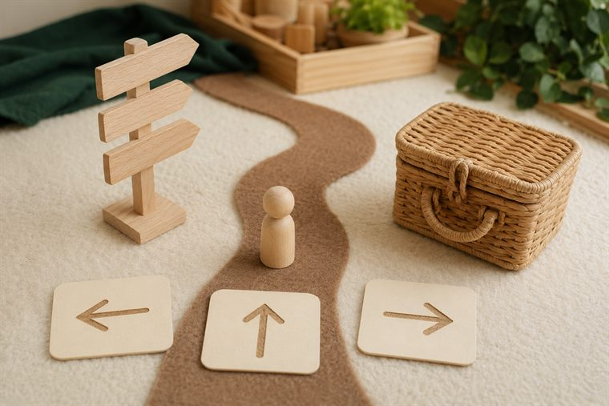
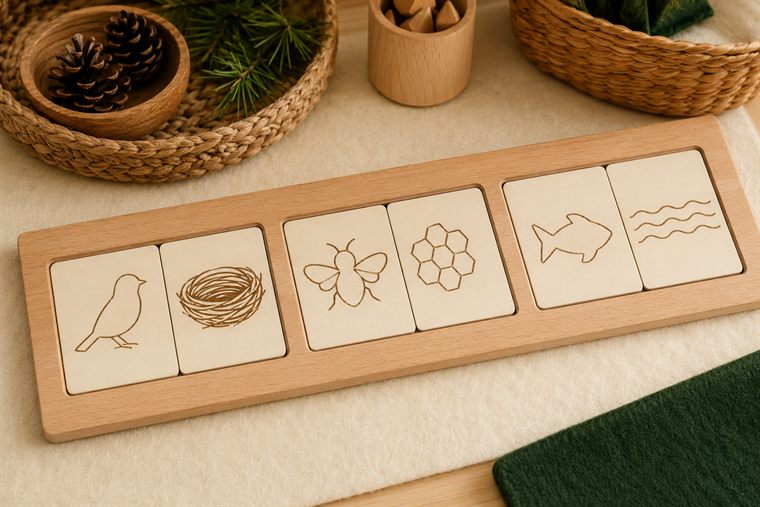
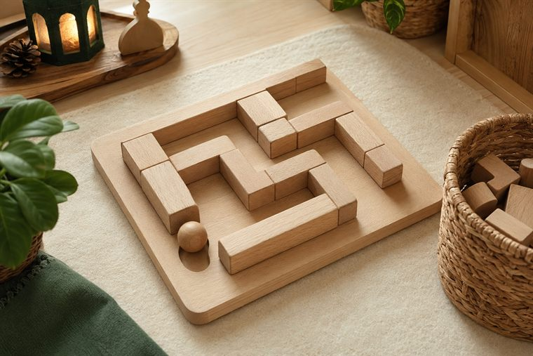
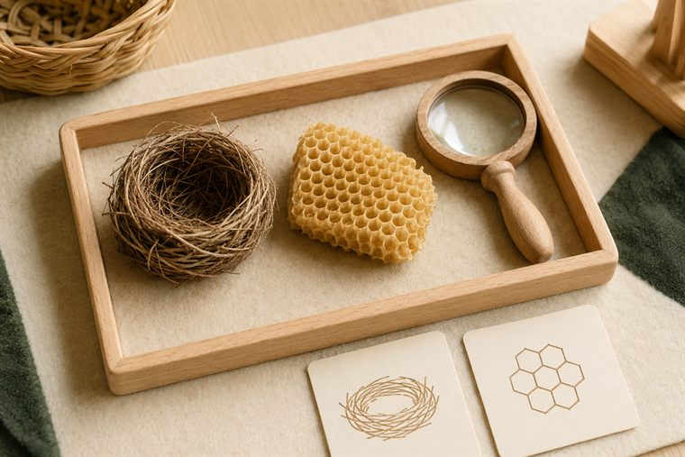

مساحاتُ لعبٍ حرّ بأدواتٍ تعليمية. لكثرة الأعداد نفتح ٤ أركانٍ متوازية بمراكز مختلفة؛ وزّعي المجموعات عليها وتتناوب بينها في الفترتين حتى لا تتكدّس. كل ركنٍ لمسةٌ تطبيقية خفيفة على فكرة اليوم. (أعمار ٥–٦: بناء/تلوين جاهز/قصّ ولصق/ترتيب/اختيار بطاقات/أدوار/حركة — بلا كتابة أو رسمٍ حرّ.)
دروس اليوم المتكاملة: كتابي المنير (سورة النبأ · تدبّر الآيات ١٧–٢٠) · علّمني ربي (الله الهادي) · أحبّك ربّي (الصمد ٢: حاجة الإنسان لربّه) · مهاراتي (الأشكال الأربعة).

🏠 ركن الإيهام · «المسافرُ يهتدي بهداية الله»
لعبُ أدوارٍ: مسافرٌ يبحثُ عن طريقه فيهتدي ببطاقاتِ الاتّجاه إلى وجهته، مع تذكّرِ أنّ اللهَ وحده هو الهادي الذي يهدي مَن يسأله. (لعبُ أدوارٍ بمجسّماتٍ بلا ملامح.)
🧰 الأدوات: بطاقاتُ طريقٍ واتّجاه مصوّرة · قبّعاتُ لعبٍ للمسافر · مجسّماتٌ ومركباتُ لعبٍ بلا ملامح.
📋 دور المعلمة: تدير اللعبَ الحرّ ثم تنسبُ الهدايةَ إلى الله: «مَن يهدي المسافرَ والحائرَ طريقَه؟»؛ تحتفي بالتعاون.
🌱 المعنى المركزي: اللهُ الهادي يهدي مَن يسأله؛ فأدعوه أن يهديني.
📜 قوانين الركن: أبقى في ركني حتى ينتهي الوقت · أحافظ على أدواته · أتشارك وأنتظر دوري · أُعيد الأدوات مرتّبة.

🧩 أدرك وأستمتع · «كيف هدى اللهُ المخلوق؟»
يطابقُ الطفل مخلوقًا بهدايته المصوّرة (طائرٌ ↔ عشُّه · نحلةٌ ↔ خليّتها · سمكةٌ ↔ سباحتها)، لعبًا بلا كتابة، فيرى كيف هدى اللهُ كلَّ مخلوقٍ لما يصلحه. (صورٌ ودُمًى بلا ملامح.)
🧰 الأدوات: بطاقاتُ مطابقةٍ جاهزة (مخلوقٌ ↔ هدايته) · لوحةُ ترتيبٍ مصوّرة · سلالُ تصنيف.
📋 دور المعلمة: تنمذجُ مطابقةً واحدة ثم تترك الطفلَ يستكشف؛ تحاورُه: «مَن هدى الطيرَ إلى عشّه؟»؛ تحتفي بالمحاولة.
🌱 المعنى المركزي: هدى اللهُ كلَّ مخلوقٍ لما يصلحه؛ سبحان الهادي.
📜 قوانين الركن: أبقى في ركني حتى ينتهي الوقت · أحافظ على أدواته · أتشارك وأنتظر دوري · أُعيد الأدوات مرتّبة.

🧱 ساحة البناء · «أبني طريقَ الهداية»
يبني الطفل بالمكعبات مسارًا/متاهةً، ثم يمرّرُ كرةً أو مجسّمًا صغيرًا إلى نهاية الطريق؛ رمزٌ لأنّ اللهَ يهدي عبادَه إلى الطريق المستقيم. (بناءٌ حرّ ولعب.)
🧰 الأدوات: مكعباتٌ خشبية متنوّعة الأحجام · كراتٌ ومجسّماتٌ صغيرة بلا ملامح · قاعدةُ/سجادةُ البناء.
📋 دور المعلمة: تُتيح البناءَ الحرّ ثم تربطُ الطريقَ بالهداية: «مَن يهدينا الطريقَ الصحيح إذا ضللنا؟»؛ تشجّع التعاون.
🌱 المعنى المركزي: اللهُ يهدي للطريق المستقيم؛ فأتّبعُ هداه.
📜 قوانين الركن: أبقى في ركني حتى ينتهي الوقت · أحافظ على أدواته · أتشارك وأنتظر دوري · أُعيد الأدوات مرتّبة.

🔎 أكتشف ما حولي · «آثارُ هداية الله في المخلوقات»
يلاحظُ الطفل بالمكبّر صورَ وعيّناتِ مخلوقاتٍ اهتدت بأمر الله (عشُّ طائرٍ · قرصُ خليّةٍ سداسيّ · مسارُ نملٍ)، ويتفكّرُ في دقّةِ هدايتها ويقولُ «سبحان الهادي». (ملاحظةٌ حسّية بلا كتابة.)
🧰 الأدوات: صورٌ وعيّناتٌ آمنة (عشٌّ · قطعةُ شمعٍ · أصداف) · مكبّراتٌ وعدساتٌ يدوية · بطاقاتُ تسبيح مصوّرة.
📋 دور المعلمة: توجّه الملاحظةَ والتسبيح: «مَن علّم الطيرَ بناءَ عشّه؟ ومَن هدى النحلةَ لخليّتها؟»؛ تحتفي بالدهشة.
🌱 المعنى المركزي: هدايةُ الله باديةٌ في كلّ مخلوق؛ فأتفكّرُ وأُسبّح.
📜 قوانين الركن: أبقى في ركني حتى ينتهي الوقت · أحافظ على أدواته · أتشارك وأنتظر دوري · أُعيد الأدوات مرتّبة.
تفاصيلُ الأركان الستّة وروتينُها في تبويب «خريطة الأركان» أعلى الصفحة، ولكلِّ لقاءٍ ركنان تطبيقيّان داخل دليله.